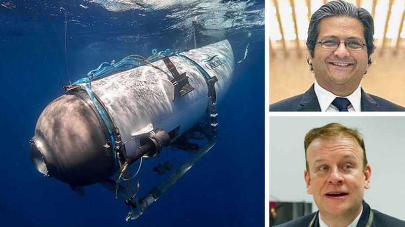
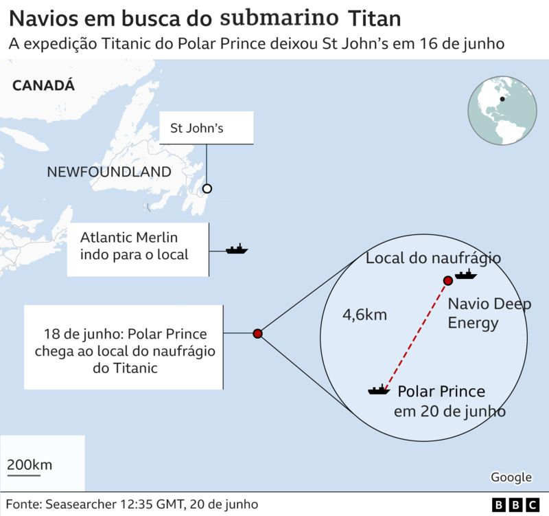
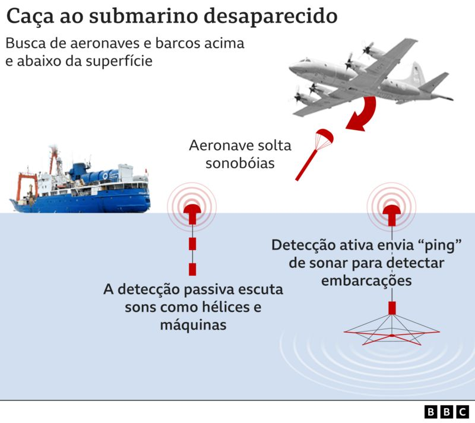

Quem são os 5 ocupantes do submarino desaparecido em expedição ao Titanic
Imagem do veículo submersível, de Hamish Harding e Shahzada Dawood
Equipes de resgate correm contra o tempo para localizar o veículo submersível que desapareceu no último domingo (18/06) no Oceano Atlântico, próximo a Newfoundland, no Canadá.
O submersível fazia uma expedição até o naufrágio do Titanic, localizado a 3.800 metros de profundidade no fundo do mar.
Um mergulho completo até o naufrágio, incluindo descida e subida, leva oito horas no total.
Mas a tripulação do submersível Titan, que pertence à empresa OceanGate, perdeu contato com a base uma hora e 45 minutos após submergir, segundo a Guarda Costeira americana.
Equipes de busca dos EUA e do Canadá estão tentando encontrar o submersível. Nesta terça-feira (20/06), às 14h em Brasília, a Guarda Costeira dos Estados Unidos divulgou que o veículo ainda tinha cerca de 40 horas de oxigênio disponível.
A OceanGate cobra US$ 250 mil (cerca de R$ 1,2 milhão) por pessoa pela expedição de oito dias, que sai do Canadá, para ver o famoso naufrágio.
As identidades das cinco pessoas que estão a bordo da embarcação foram confirmadas ao longo dos últimos dias.
A Guarda Costeira americana informou que um navio de pesquisa chamado Polar Prince havia realizado uma busca na superfície na noite de segunda-feira
Hamish Harding

Hamish Harding é um bilionário britânico amante de aventuras
Embarcar para ver os destroços do Titanic exigia duas coisas: espírito de aventura e muito dinheiro.
O bilionário britânico Hamish Harding, de 58 anos, tem ambos.
Harding embarcou no submersível no domingo, indicaram nas redes sociais sua empresa Action Aviation e seu enteado, Brian Szasz, em uma publicação que foi apagada depois.
O explorador e turista espacial, que mora nos Emirados Árabes Unidos, é fundador do Action Group e presidente da Action Aviation, empresa de serviços de vendas e operações de aviação com sede em Dubai.
Formado em Ciências Naturais e Engenharia Química pela Universidade de Cambridge, no Reino Unido, Harding é um apaixonado pelo céu e pelo espaço desde jovem, razão pela qual se tornou piloto e paraquedista.
Não é à toa que, em 2022, recebeu o prêmio Lendas Vivas da Aviação.
Ele também é membro do conselho do The Explorers Club, um renomado clube internacional de exploradores e cientistas.
Harding já viajou várias vezes para a Antártida, onde acompanhou em 2016 o ex-astronauta Buzz Aldrin, quando o mesmo se tornou a pessoa mais velha a chegar ao Polo Sul aos 86 anos.
Em 2017, ele colaborou com a empresa de turismo de luxo White Desert para introduzir o primeiro serviço regular de voos privados para a Antártida.
Seu espírito de aventura também o levou ao espaço. Em junho de 2022, ele viajou a bordo da New Shepard em um voo suborbital, como parte da missão NS-21 da Blue Origin, empresa de Jeff Bezos.
Harding é dono de três recordes no Guinness Book, o livro dos recordes mundiais: em 2019, ele deu a volta ao mundo de avião mais rápida já registrada, pelos Polos Norte e Sul; e em 2021, em parceria com o americano Víctor Vescovo, quebrou dois recordes de distância e duração em máxima profundidade oceânica ao descer a cerca de 11 mil metros na Fossa das Marianas, no Oceano Pacífico.
Shahzada e Suleman Dawood

Hamish Harding é um bilionário britânico amante de aventuras
Em um comunicado divulgado na terça-feira (20), a família Dawood confirmou que Shahzada Dawood e seu filho, Suleman Dawood, embarcaram na expedição para visitar os destroços do Titanic.
"Estamos muito gratos pela preocupação demonstrada por nossos colegas e amigos e gostaríamos de pedir a todos que orem por sua segurança, garantindo a privacidade da família neste momento."
Shahzada Dawood, de 48 anos, vem de uma das famílias mais ricas do Paquistão.
Ele mora em Surrey, no sul de Londres, com a esposa, Christine, e os filhos Suleman, de 19, que também está a bordo do Titan, e Alina.
Nascido no Paquistão, ele se mudou para o Reino Unido, onde se formou em direito pela Universidade de Buckingham. Ele tem nacionalidade britânica.
Entre as funções que desempenha, Dawood é membro do SETI Institute, na Califórnia, cuja missão é explorar, entender e explicar a origem e a natureza da vida no Universo.
Também é membro do Círculo de Fundadores do British Asian Trust, cujo presidente é o rei Charles 3º.
Stockton Rush

Stockton Rush é fundador e presidente da OceanGate Expeditions
Stockton Rush, presidente da OceanGate Expeditions, também estava a bordo do submersível.
Desde sua criação, em 2009, a empresa de submarinos tripulados para aluguel e pesquisa científica — um ícone na exploração das profundezas do mar — conseguiu criar dispositivos capazes de atingir profundidades de 4.000 e 6.000 metros.
De origem americana, Rush começou sua carreira nos céus — e se tornou o piloto de jato de transporte mais jovem do mundo, com apenas 19 anos, em 1981. Três anos depois, entrou na McDonnell Douglas como engenheiro de testes de voo do programa F-15.
A experiência na indústria aeroespacial e a paixão pelos oceanos se consolidaram na fundação da OceanGate em 2009.
Em 2012, ele cofundou a OceanGate Foundation, uma organização sem fins lucrativos dedicada a promover avanços em tecnologia marinha, ciência, história e arqueologia.
Em 1989, ele construiu uma aeronave experimental, a Glasair III, que segue voando hoje.
Também criou um submarino para duas pessoas modificando um modelo Kittredge K-350.
Paul-Henry Nargeolet

O francês Paul-Henry Nargeolet foi identificado como o piloto do submersível
O quinto ocupante é o francês Paul-Henry Nargeolet, um nome altamente respeitado no campo da pesquisa subaquática.
Uma publicação de Harding no Facebook, antes do embarque, revelou a presença de Nargeolet no submersível.
Ex-comandante da Marinha Francesa, ele entrou para o Instituto Francês de Pesquisa e Exploração do Mar (Ifremer, na sigla em francês) em 1986 — e um ano depois, liderou a primeira expedição de recuperação do Titanic.
Ele se destaca por seu extenso trabalho no local do naufrágio do Titanic: como diretor de pesquisa submarina das empresas Experiential Media Group e RMS Titanic — e é considerado uma autoridade no que se refere ao histórico naufrágio de 1912.
Nargeolet liderou várias expedições ao Titanic, completando 35 mergulhos, e supervisionou a recuperação de 5 mil artefatos, incluindo uma parte de 20 toneladas do casco do navio, conhecida como Big Piece, agora em exposição em Las Vegas, nos EUA.
Em 2010, ele liderou uma expedição avançada que criou o primeiro mapa de pesquisa abrangente do Titanic, por meio de um sonar de alta resolução que gerou imagens em 3D da proa, popa e destroços espalhados no fundo do mar.
